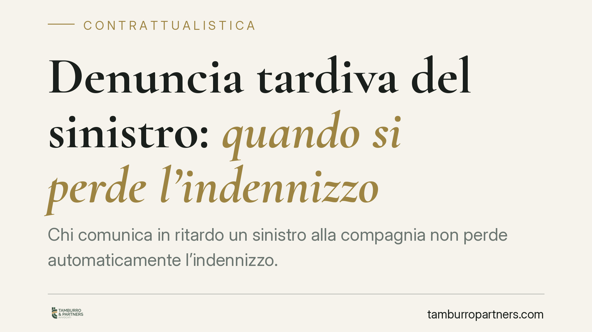

Denuncia tardiva del sinistro: quando si perde l'indennizzo
Chi comunica in ritardo un sinistro alla compagnia non perde automaticamente l'indennizzo. La Cassazione ribadisce un principio consolidato: la decadenza totale scatta solo per il dolo dell'assicurato; il semplice ritardo colposo comporta al più una riduzione del risarcimento, che la compagnia deve dimostrare. Per le imprese assicurate è una distinzione decisiva sul piano probatorio e contrattuale.

Il caso
Un imprenditore assicurato comunica alla propria compagnia un sinistro oltre il termine previsto dalla polizza. La compagnia rifiuta l'indennizzo, invocando la tardività della denuncia come causa di decadenza totale dal diritto.
La questione è ricorrente nella pratica contrattuale: il ritardo nella comunicazione, da solo, basta a far perdere la copertura? La risposta della giurisprudenza civile è articolata e distingue nettamente due situazioni.
Inquadramento normativo
Due norme del codice civile governano la materia.
L'art. 1913 c.c. impone all'assicurato di dare avviso del sinistro all'assicuratore entro tre giorni da quando il sinistro si è verificato o l'assicurato ne ha avuto conoscenza. Si tratta però di un termine derogabile: nella prassi le polizze lo modificano quasi sempre, spesso ampliandolo o articolandolo in modo diverso. Il primo riferimento operativo, dunque, non è il codice ma il testo della singola polizza.
L'art. 1915 c.c. disciplina le conseguenze dell'inadempimento di questo obbligo e opera una distinzione centrale:
- se l'assicurato dolosamente non adempie l'obbligo di avviso, perde il diritto all'indennità;
- se vi è colpa, l'assicuratore ha diritto di ridurre l'indennità in ragione del pregiudizio sofferto.
Il dolo rilevante ai sensi dell'art. 1915 c.c. va inteso in senso civilistico: coscienza e volontà di non adempiere, con intento di arrecare pregiudizio all'assicuratore o di trarne un vantaggio indebito. Non occorre trapiantare meccanicamente la nozione penalistica del dolo (art. 43 cod. pen.): la Cassazione civile àncora la valutazione alle categorie proprie dell'inadempimento contrattuale, richiedendo la prova di un atteggiamento consapevolmente fraudolento, non la semplice negligenza.
Cosa stabilisce la giurisprudenza
Il principio, consolidato nella giurisprudenza di legittimità, è duplice.
Primo. La decadenza totale dall'indennizzo non è un effetto automatico del ritardo. Essa presuppone il dolo dell'assicurato, cioè un comportamento intenzionalmente diretto a pregiudicare l'assicuratore o a ostacolarne l'accertamento del sinistro.
Secondo. Il ritardo semplicemente colposo non estingue il diritto, ma legittima solo una riduzione dell'indennità, proporzionata al danno effettivamente causato dall'avviso tardivo. E qui pesa un elemento decisivo: l'onere della prova grava sull'assicuratore. È la compagnia a dover dimostrare sia la sussistenza del dolo (per la decadenza totale), sia, in caso di colpa, l'entità concreta del pregiudizio subìto a causa del ritardo.
In mancanza di tale prova, il diritto all'indennizzo resta integro.
Implicazioni pratiche
Per l'impresa assicurata il principio ha ricadute concrete.
Un ritardo nella denuncia non significa, di per sé, la perdita della copertura. Se la compagnia oppone la decadenza, deve provare un intento fraudolento; se invoca la riduzione, deve quantificare il danno derivato dal ritardo, ad esempio la perdita della possibilità di accertare le cause del sinistro o di limitare le conseguenze.
La posizione dell'assicurato si rafforza quando il ritardo è giustificabile (impossibilità materiale, mancata conoscenza tempestiva del fatto, coinvolgimento di terzi come subappaltatori) e quando dalla tardività non è derivato alcun aggravamento accertabile.
Resta però centrale il contenuto della polizza: le clausole sui termini e sulle modalità di denuncia vanno lette con attenzione, perché definiscono il perimetro dell'obbligo prima ancora dell'art. 1913 c.c.
Cosa fare in concreto
- Verificate subito la polizza. Individuate il termine effettivo di denuncia e le modalità richieste (raccomandata, PEC, portale): quasi sempre derogano al termine di tre giorni del codice.
- Denunciate comunque, anche se in ritardo. La comunicazione tardiva è preferibile all'omissione; conservate prova della data e del contenuto dell'invio.
- Documentate le ragioni del ritardo. Annotate quando avete avuto effettiva conoscenza del sinistro e ogni circostanza che ha impedito la tempestività.
- Non accettate il diniego come definitivo. Se la compagnia oppone la decadenza, chiedete per iscritto le ragioni e verificate se è stato allegato e provato il dolo.
- Fate valutare la quantificazione della riduzione. In caso di ritardo colposo, l'eventuale decurtazione deve essere proporzionata e dimostrata: una riduzione forfettaria o integrale è contestabile.
Consigliamo di sottoporre la polizza e la corrispondenza con la compagnia a una verifica tecnica prima di qualsiasi rinuncia o transazione.
---
Contributo informativo a cura di Tamburro & Partners Avvocati - Avv. Giuseppe Tamburro. Non costituisce parere legale.
Ogni contratto ha il suo equilibrio.
Se vuoi una revisione delle clausole o una redazione su misura, scrivi allo studio. Ti rispondiamo entro un giorno lavorativo.